Die Dolomiten sind das meistfotografierte Massiv Europas, und man sieht leicht, warum: bleiche Kalktürme, türkise Seen, winzige Kapellen auf hohen grünen Pässen. Doch die Ikonen kommen mit Menschenmengen, und das Beste dieser Orte zeigt sich nur zur richtigen Stunde. Das ist unser ehrlicher Feldführer zu den schönsten Orten für ein Elopement — was jeden besonders macht, wann ihr dort sein solltet, wie ihr hinkommt und wie ihr ihn für eine Stunde fast für euch allein habt.
Der richtige Ort ist nicht einfach der hübscheste — es ist der, der zu eurem Tag passt. Manche Paare wollen die Postkarte — die Boote am Pragser Wildsee, die Türme der Drei Zinnen — und stehen gern vor der Dämmerung auf, um sie leer zu haben. Andere wollen einen stillen grünen Pass mit einer Kapelle und niemandem sonst. Aufwand, Erreichbarkeit, Saison und Licht ziehen alle an der Wahl, deshalb starten wir von dem Gefühl, das ihr sucht, und arbeiten uns zum Ort zurück. Unten stehen die, zu denen wir immer wieder zurückkehren, und was jeder am besten kann.
Wenn ihr ein Foto der Dolomiten gesehen habt, war es wahrscheinlich hier: smaragdgrünes Wasser, eine Gipfelwand und ein hölzernes Bootshaus, gesäumt von Ruderbooten. Der Pragser Wildsee verdient den Ruhm — an einem stillen Morgen ist die Spiegelung perfekt und die Farbe fast unwirklich —, doch dieser Ruhm ist auch sein Haken, denn ab dem späten Vormittag steht man am Ufer Schulter an Schulter. Der ganze Trick ist, zuerst da zu sein, ehe der Tag ankommt.
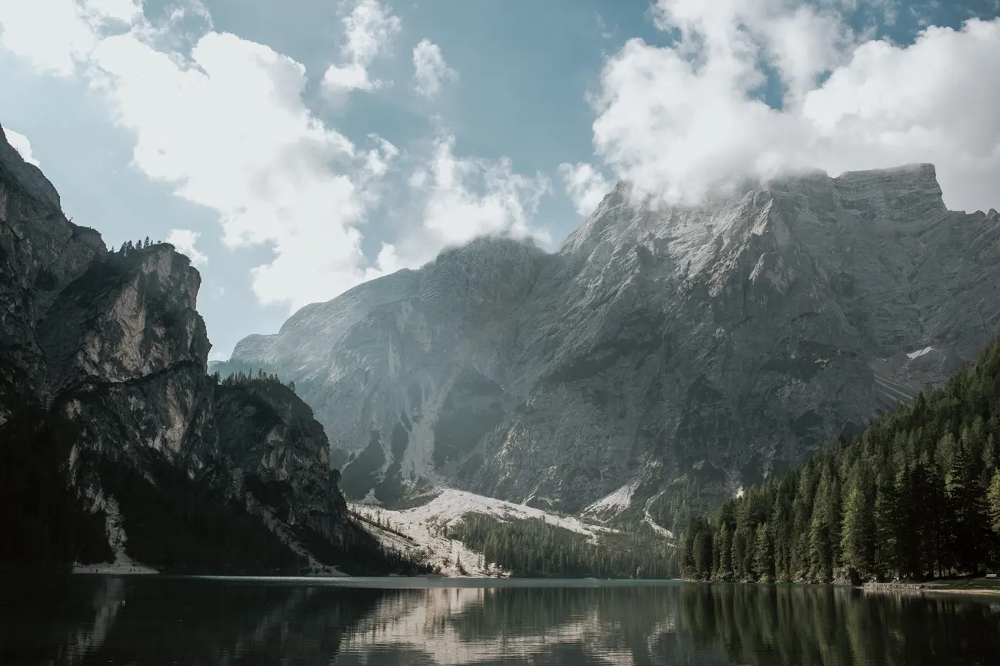
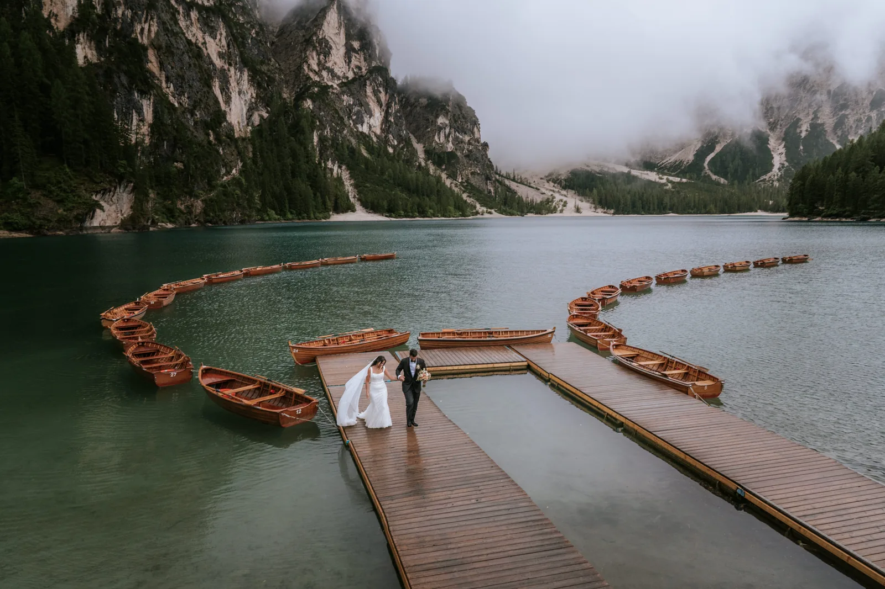
Die Boote sind das Markenzeichen. Eines für ein paar Minuten auf dem Wasser zu mieten, schenkt euch das Bild, von dem alle träumen — ihr beide treibend auf Glas, der große Talkessel dahinter aufragend —, und draußen auf dem See seid ihr plötzlich allein, selbst wenn sich das Ufer füllt. Es ist ruhig, es ist leicht, und es lohnt sich, es auf den Moment zu legen, in dem die Gipfel das erste warme Licht fangen.

Kommt zum Sonnenaufgang. Vom 1. Juli bis 15. September braucht die Zufahrtsstraße zwischen 09:00 und 16:00 Uhr eine Voranmeldung, ein weiterer Grund, warum wir das Morgenfenster lieben: Kommt davor an, und der See gehört euch, der Parkplatz ist leer und das Licht leistet seine beste Arbeit. Außerhalb der Saison und außerhalb dieser Zeiten gilt die Reservierung nicht — doch der Andrang begünstigt weiterhin den Frühaufsteher, also ist der Plan in jedem Monat derselbe.
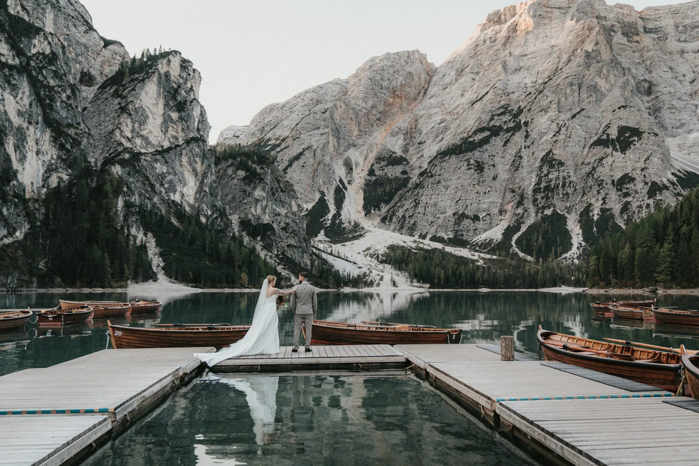
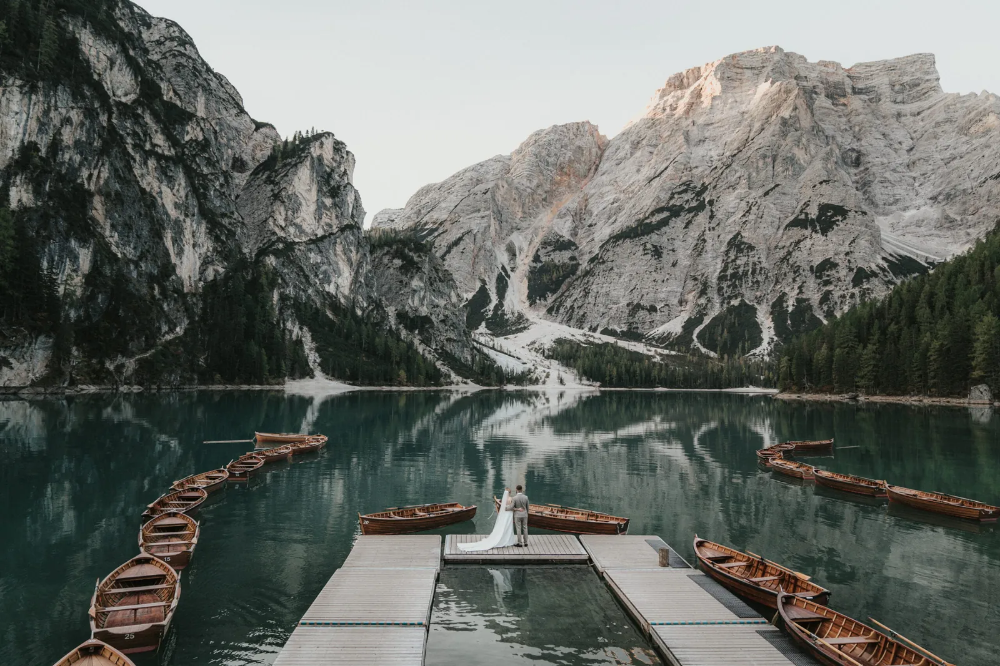
Das Praktische ist hier einfach, und das ist Teil des Reizes. Es gibt ein historisches Hotel und einen Parkplatz direkt am Ufer, der Weg zum Bootshaus ist flach und kurz, und der ganze Ort passt zu Kleid und schönen Schuhen. Genau diese Erreichbarkeit ist der Grund, warum Braies oft dort ist, wo wir den ersten Bergmorgen eines Paares beginnen — maximale Schönheit, minimaler Aufwand, ehe es irgendwohin Wilderes geht.
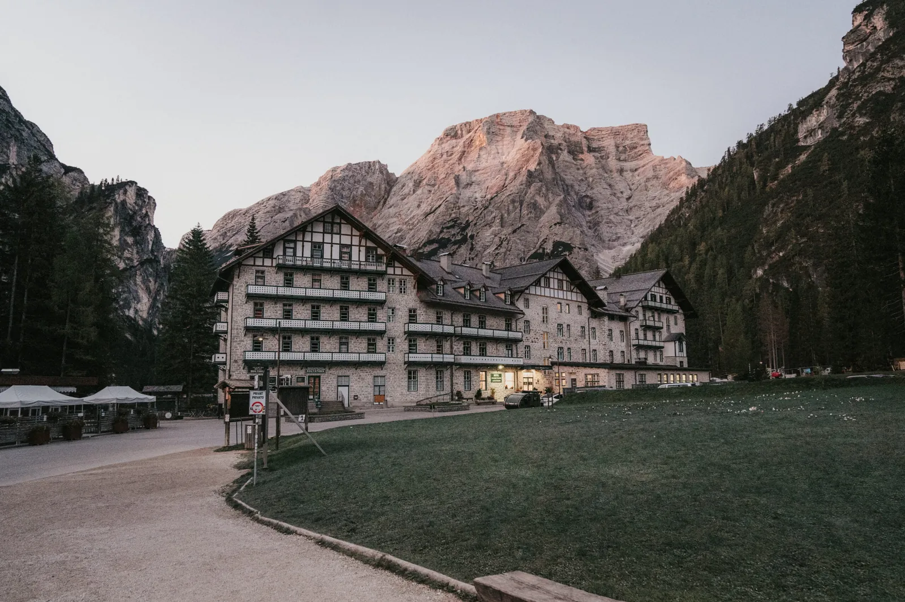
Ist Braies Schönheit, sind die Drei Zinnen Dramatik: drei kolossale Steintürme, die allein über allem stehen — wohl die berühmteste Silhouette der Alpen. Ihren Fuß erreicht ihr über die Auronzo-Mautstraße, die im Sommer in den frühen Stunden befahrbar ist, ihr könnt also im Dunkeln hinauffahren und da sein, wenn die erste Sonne den Fels in Brand setzt. Rund um sie öffnet ein Netz leichter Wege Band um Band atemberaubenden Vordergrunds — es gibt einen Grund, warum Paare für diese Elopement-Kulisse über Kontinente reisen.

Im Winter wird die ganze Szene monochrom und fast überirdisch — Schnee bis zum Horizont, die Türme auf Schwarzweiß reduziert —, und ihr habt sie vielleicht ganz für euch. Es verlangt mehr: warme Schichten, sicheren Tritt und einen wachen Blick darauf, was offen ist, denn die Mautstraße und die Berghütten fahren im Winter reduziert oder schließen ganz. Wenn es passt, ist es eines der spektakulärsten Dinge, die wir das ganze Jahr fotografieren.
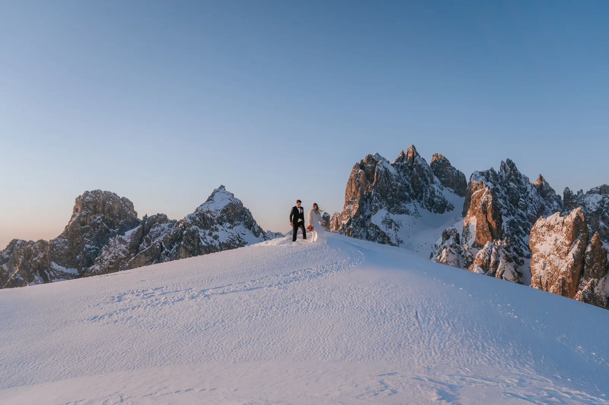
Über dem grünen Grödnertal erhebt sich die Seceda, deren geneigter Wiesengrat und Sägezahn-Horizont anders sind als alles sonst im Massiv — eine riesige Messerschneide aus Wiese, die zu den bleichen Geislerspitzen abfällt. Eine Seilbahn von St. Ulrich bringt euch hinauf, sie öffnet allerdings erst gegen 08:30 Uhr, ein echter Seceda-Sonnenaufgang heißt also ein Stirnlampen-Aufstieg oder eine Hüttennacht; zur goldenen Stunde nehmt ihr sie einfach auf dem Weg nach oben. Das Tal selbst ist eine sanfte, märchenhafte Basis aus Dörfern, Türmen und Weiden.
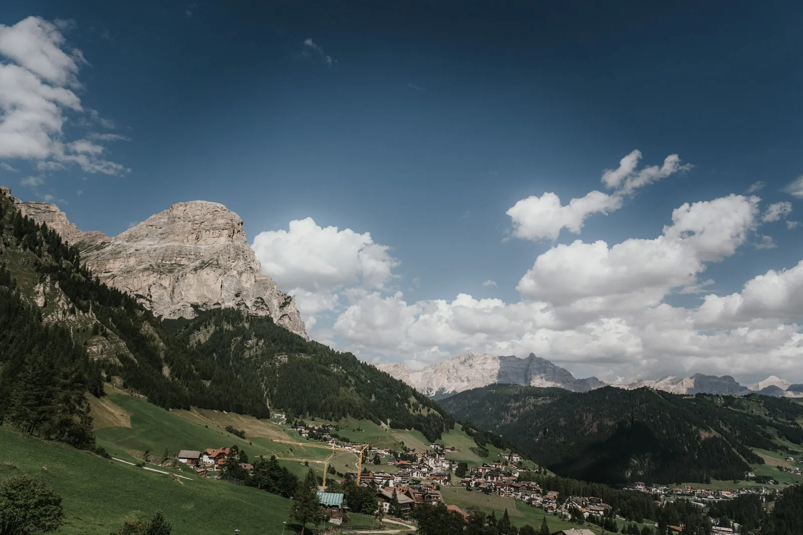
Die Seceda passt wunderbar zum übrigen Gröden. St. Ulrich, St. Christina und Wolkenstein bilden eine bequeme, märchenhafte Basis — Holzdörfer mit Türmen und Spas, eine leichte Fahrt von den Pässen und Seilbahnen entfernt. Viele Paare bleiben hier ein paar Tage und lassen uns die Sehenswürdigkeiten aneinanderreihen: den Grat an einem Morgen, einen Pass zur goldenen Stunde, einen See im Morgengrauen. Es ist der sanfteste Weg, viel vom Massiv zu sehen, ohne sich je gehetzt zu fühlen.
Die Sella ist eine gewaltige Festung aus Fels, umringt von vier Bergpässen, und ihre Wände bilden eine der grandiosesten und zugleich zugänglichsten Kulissen der Dolomiten — ihr steht auf weicher Wiese mit tausend Metern senkrechten Steins im Rücken, Minuten vom Auto entfernt. Sie ist ein Favorit von uns für eine Zeremonie: dramatisch genug, um den Atem zu rauben, sanft genug unter den Füßen für Kleid, Trauredner und ein, zwei Gäste. Das Morgenlicht streift über das Gras und wärmt den Fels wunderbar.
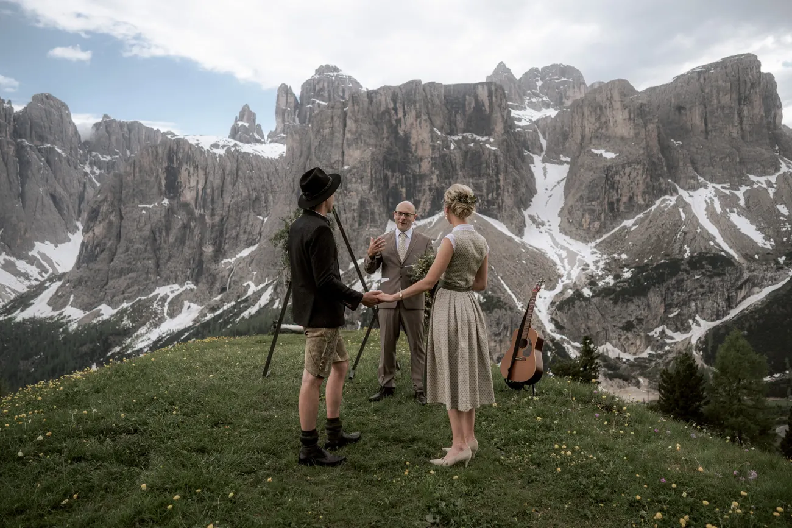
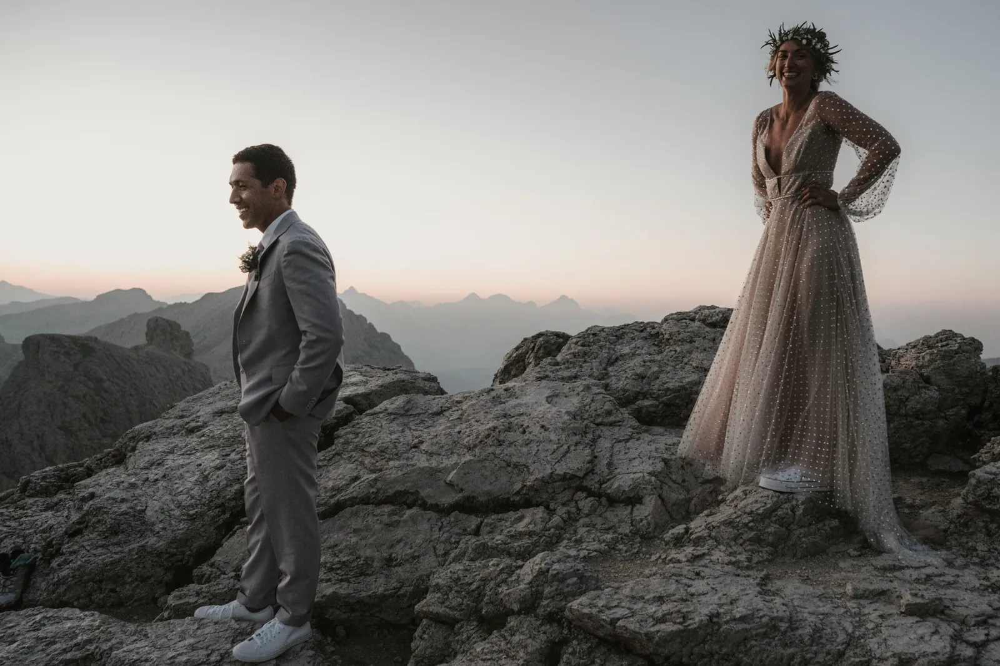
Was wir an der Sella am meisten lieben, ist, wie wenig sie für so viel verlangt. Von den Pässen, die sie umringen, seid ihr schon auf über 2.000 Metern, ein paar Schritte setzen euch also auf offene Wiese, die Wände hoch über euch aufragend — kein Gekraxel, keine Ausgesetztheit, nur Dimension. Sie funktioniert auch bei fast jedem Wetter: Selbst wenn Wolken über den Gipfeln hängen, bleibt der Fuß der Sella fotogen und grandios. Für einen Morgen mit schlechter Vorhersage ist sie eine unserer verlässlichsten Rettungen.
Die hohen Pässe, die die Täler verbinden — Grödnerjoch, Sellajoch, Pordoijoch —, sind das leichte Geheimnis der Dolomiten: Ihr fahrt auf über 2.000 Meter und trett direkt auf Almwiese hinaus, die Riesen ringsum, ohne Aufstieg. Sie sind perfekt für Paare, die das Hochgebirgsgefühl ohne Aufwand wollen oder Familie dabeihaben. Im Sommer sind sie offen und herrlich; in der Nebensaison leeren sie sich und glühen. Wir kombinieren oft einen Pass zur goldenen Stunde mit einem See im Morgengrauen.
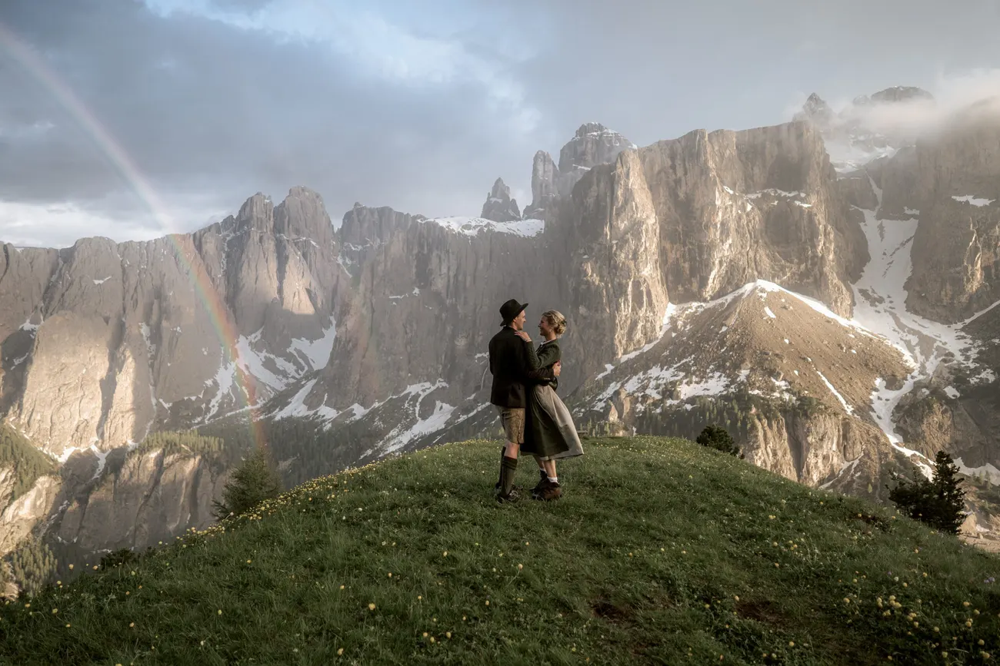
Von allen Pässen ist der Passo Giau der, an den wir unser Herz verlieren. Eine kleine spitze Kapelle steht auf dem grünen Sattel, die Haifischflossen-Spitze der Ra Gusela steigt direkt dahinter auf, und in der Dämmerung wird das ganze Amphitheater der Grate glühend. Er liegt an der Straße und ist leicht, wirkt aber abgelegen und wild, und das Abendlicht hier gehört zum besten der Dolomiten. Für ein Paar, das Dramatik und einen Hauch Märchen ohne Wanderung will, ist er kaum zu schlagen.


Weil der Giau das Abendlicht so gut nimmt, planen wir ihn meist für den Sonnenuntergang statt den Morgen — und weil er ein Bergpass ist, gehört er zu den wenigen Ikonen, die ihr spät am Tag leicht erreicht. Parken, eine Minute auf die Wiese gehen und den Himmel den Rest machen lassen. Wenn die Grate das letzte Licht fangen und die Kapelle zur Silhouette wird, ist es so filmreif wie irgendwo, wo wir arbeiten — und ihr seid binnen einer Stunde zurück zu einem Abendessen im Tal.
Jenseits der berühmten Namen sind einige unserer liebsten Bilder die stillen: ein Gipfelkreuz, das das erste Licht fängt, ein Brautstrauß, abgelegt auf kaltem Fels, ein Grat, für den sonst niemand einen Namen hat. Ist ein Ort zu beliebt, um Privatsphäre zu versprechen, gehen wir oft fünf Minuten weiter zu einem kleineren Band mit denselben Gipfeln dahinter und ohne die Menge davor. Die Dolomiten sind so großzügig — die Ikone ist nie das einzige gute Bild.
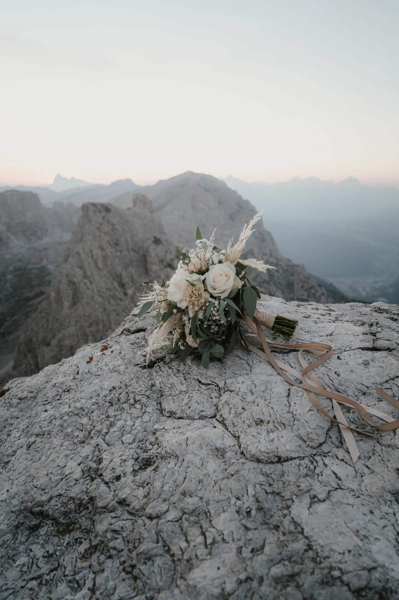
Wenn ihr gern geht, verbirgt das Massiv stilleres Wasser, das den Aufwand belohnt. Der Lago di Sorapis leuchtet am Ende eines felsigen Wegs in einem unwahrscheinlichen milchigen Blau; der Lago di Federa liegt unter der Croda da Lago und wird golden, wenn es die umstehenden Lärchen tun; der kleine Lago d’Antorno und der Lago di Limides schenken große Spiegelungen für kurze Wege. Keiner davon trägt die Menschenmengen von Braies, und eine Zeremonie an einem von ihnen fühlt sich wirklich entdeckt an. Sagt uns, wie weit ihr gehen wollt, und wir nennen euch den passenden.
Die Saison verändert diese Orte so sehr wie die Stunde. Sommer (Juni bis September) öffnet jede Straße, Bahn und Hütte und gibt grüne Wiesen und das wärmste Licht — aber auch die vollsten Parkplätze. Herbst ist unser stiller Favorit: Die Lärchen werden golden, der Andrang lichtet sich, und die tiefe Sonne schmeichelt dem Fels — wobei die ersten Schneefälle die höchsten Pässe schließen können. Winter ist für die Mutigen — monochrom, still, spektakulär, mit eingeschränktem Zugang. Welcher Monat auch immer: Der Sonnenaufgang ist der große Gleichmacher — selbst die vollste Ikone ist bei erstem Licht ruhig.
Das Hinkommen ist leichter, als die Dramatik vermuten lässt. Die meisten Paare fliegen nach Venedig, Verona oder Innsbruck und fahren zwei bis drei Stunden hinein. Von einer Talbasis wie Cortina, Gröden oder der Alta Badia sind die Ikonen in einer Stunde erreichbar: Braies und die Pässe liegen an der Straße, die Seceda und andere Grate sind eine Seilbahn, die Drei Zinnen eine Sommer-Mautstraße und die versteckten Seen ein Fußweg. Wir bauen die Route um das Licht — welcher Ort im Morgengrauen, welcher in der Dämmerung — und übernehmen Reservierungen, Timing und Fahrerei, damit euer Morgen ruhig bleibt.
Wo ihr euch einquartiert, prägt die Reise. Cortina d’Ampezzo liegt am nächsten zu Braies, den Drei Zinnen und dem Passo Giau; Gröden und die Alta Badia sind am besten für die Seceda, die Sella und die westlichen Pässe. Wir helfen euch, die Basis zu wählen, die eure Orte in leichter Morgen-Fahrweite hält, buchen Hütten, wo eine Übernachtung einen Sonnenaufgang möglich macht, und geben euch einen einfachen Ablauf, damit ihr am Tag nur an eines denken müsst: aneinander.
Diese Orte bleiben schön, weil Menschen auf sie achten, und ein paar Regeln halten uns willkommen. Die Braies-Straße braucht ihre Sommer-Reservierung; mehrere Gebiete sind geschützte Naturzonen, in denen Aufbauten und das Gehen abseits der Wege begrenzt sind; und private Drohnen sind in weiten Teilen der Dolomiten verboten, kontrolliert und mit Bußgeld belegt. Am Boden bleiben wir auf festem Untergrund, halten Gruppen klein, hinterlassen keine Spuren und blockieren nie genau die Wege, die wir fotografieren kamen. Respekt ist Teil des Wiederkommen-Dürfens — und der Grund, warum wir jeden Ort erkunden und bestätigen, ehe wir euch hinbringen.
Es gibt keinen einzelnen Sieger, und das ist die ehrliche Antwort. Der Pragser Wildsee ist die Ikone — das türkise Wasser und die Holzboote, die sich jeder vorstellt —, aber die Drei Zinnen, der Seceda-Grat und die kleine Kapelle am Passo Giau gewinnen jeweils aus einem anderen Grund. Wir helfen euch, den Ort auf die Stimmung und den Aufwand abzustimmen, den ihr wollt, und auf das Licht an eurem Datum.
Für eine kleine Zeremonie im offenen Gelände braucht ihr in der Regel keine besondere Genehmigung, aber die Zufahrtsregeln zählen. Die Straße zum Pragser Wildsee braucht vom 1. Juli bis 15. September zwischen 09:00 und 16:00 Uhr eine Voranmeldung; mehrere Gebiete sind geschützte Naturzonen mit Regeln für Aufbauten; und private Drohnen sind in weiten Teilen des Massivs verboten. Wir prüfen den konkreten Ort, bevor wir ihn buchen.
Die meisten, ja. Der Pragser Wildsee, der Passo Giau sowie das Grödner- und das Sellajoch liegen an der Straße; die Seceda und andere Grate erreicht ihr per Seilbahn; nur eine Handvoll der versteckten Seen wie der Sorapis oder der Lago di Federa brauchen einen echten Weg. Wir bauen euch eine ganze Reise, die nie mehr als einen kurzen Spaziergang verlangt — oder fügen eine Wanderung hinzu, wenn ihr euch die Aussicht verdienen wollt.
Der Sonnenaufgang, fast immer. Ikonen wie Braies und die Drei Zinnen sind bei erstem Licht magisch und leer und ab dem späten Vormittag voll, deshalb planen wir den Tag um die Dämmerung. Der Herbst bringt goldene Lärchen und viel dünnere Menschenmengen; der Hochsommer gibt das mildeste Wetter, aber die meisten Besucher. Wir wählen Stunde und Saison gemeinsam mit euch.
Die hohen, schroffen Orte sind unter Schnee unvergesslich — die Drei Zinnen und die Schneegrate werden schwarz-weiß und dramatisch. Der Preis ist die Erreichbarkeit: Manche Mautstraßen und Bahnen schließen im Winter oder fahren reduziert, und Seen wie Braies frieren zu. Wir planen um das, was wirklich offen und sicher ist — und der Winter belohnt euch mit fast völliger Einsamkeit.
Weniger, als ihr denkt — und das mit Absicht. Fünf Orte zu jagen heißt, keinen davon richtig zu sehen; wir planen meist einen Haupt-Ort für das beste Licht und vielleicht einen zweiten, leichteren in der Nähe. Über ein paar Tage reihen wir eine richtige Tour aneinander — ein See im Morgengrauen, ein Pass am Abend, ein Grat am nächsten Morgen.
Wir verwenden Cookies für anonyme Statistik (Google Analytics über Google Tag Manager), um die Website zu verbessern. Die Analyse läuft nur mit deiner Einwilligung. Datenschutz